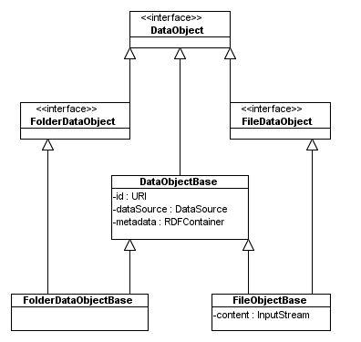

A DataObject represents an individual resource found in a physical data source, such as a file, a web page, a mail or an attachment. It contains the identifier, a reference to the DataSourceObject from which it has been created, and RDF metadata. It may also contain other arbitrary resources.
The DataObjects are currently organized into a following hierarchy:
DataObject has two specializations: FileDataObject is used to represent binary resources and holds a binary stream next to its metadata. FolderDataObject represents folder-like resources such as file or mail folders. Information about the folder nesting (parent and children) is part of the folder metadata, so there are no specialized methods in this interface; it only serves as a marker interface.
This is an example. The developer may create more data objects implementations. Note that apart from the metadata in RDF, a DataObject may also contain arbitrary resources (like an InputStream in FileDataObject). These resources may need to be returned when not needed anymore. That's why it is always necessary to invoke object.dispose() method after processing that object. It is expected that an object will free any resources it has taken after such a call. A code snippet from the ExampleFileCrawler class.
public void objectNew(Crawler dataCrawler, DataObject object) {
nrObjects++;
// process the contents on an InputStream, if available
if (object instanceof FileDataObject) {
try {
process((FileDataObject) object);
}
catch (IOException e) {
LOGGER.log(Level.WARNING, "IOException while processing " + object.getID(), e);
}
catch (ExtractorException e) {
LOGGER.log(Level.WARNING, "ExtractorException while processing " + object.getID(), e);
}
}
object.dispose();
}
Note the call to object.dispose(). Every application should give utmost attention to proper disposal of the DataObjects. Unexpected problems may occur otherwise.
If no addtional resources are not necessary, and the developer is content with RDF metadata, he can use the provided DataObjectBase class. This approach will mostly be used with crawlers that perform all the work by themselves, without resorting to the aid of Extractors of Accessors. (e.g. IcalCrawler).
Each DataObject has a RDFContainer that contains metadata describing the represented resource. This RDF model typically uses the RDF scheme defined in AccessVocabulary, although arbitrary RDF properties may be used. The RDFContainer is mutable and can therefore be refined with new metadata after construction of the DataObject.
Sometimes it is necessary to divide the crawling process from the data extraction. Conceptually a crawler may implement only the logic required for the crawling (e.g. a FileSystemCrawler can check if a file is a folder, enter it and iterate over the contents of a folder, a web crawler may simply look for links on a given page and follow those links). If the crawling logic is complicated in itself (as it surely is in both of these cases), it may be desirable to create a crawler that doesn't have to deal with the extraction process. Aperture framework provides a couple of concepts, that enable the user to divide this functionality between multiple entities
The DataAccessor may be used to encapsulate the data access. The interface has a single method called getDataObject(...). It is used to convert a given URL into a DataObject. There are multiple uses for such an interface. It may be used in a WebCrawler to create FileSystemDataObjects that encapsulate an InputStream. This input stream may be processed by an Extractor, or by another crawler.
Given a data accessor registry with appropriate factories and accessor implementations it would be possible for example to write a web crawler that can crawl web sites regardless of whether the HTML files are available in a 'normal' way via HTTP, or on a local disk, or on a FTP server (unlikely, but why not?) or through any other protocol imaginable. Such a crawler could be completely independent of underlying protocols. It could (potentially) follow any kind of URL. (of course any kind for which an Accessor implementation is available).
DataObjects are produced by a URL scheme-specific DataAccessor on a one-by-one basis, based on the URL that you pass to it. Alternatively, a stream of all DataObjects in a DataSource can be generated using a DataSource type-specific Crawler, which on its turn will use DataAccessors for accessing every individual resource.
DataObjects are created by DataAccessors. A DataAccessor embeds knowledge of how to access a particular URL scheme such as "file" or "http". One of the primary use cases for DataAccessors is to be used by Crawlers to handle access or the individual resources it encounterd, although they may also be directly invoked.
An example of a direct invocation of a DataAccessor is shown below:
RDFContainerFactory factory = ...
DataAccessor accessor = new FileAccessor();
DataObject dataObject = accessor.getDataObject("file:///C:/myfile.txt", null, null, containerFactory);
As you can see, both the DataSource and the params Map are optional. The DataSource is only used to register as an origin of the DataObject. The Map is only used to communicate extra parameters used for specific implementation (often for optimization purposes), which is not necessary here.
Besides a general method that returns the requested DataObject, DataAccessors also have a more specialized method that takes an AccessData instance as an argument. This allows for the construction of incremental Crawlers that only report new or changed DataObjects when a source is crawled a subsequent time. The DataAccessor can then use scheme-specific optimizations that prevent object creation and resource loading when it detects that the physical resource has not been changed since the last time it was accessed. The effect of this optimization can be enormous, e.g. the HttpDataAccessor can set the HTTP if-modified-since header in its request, effectively letting the web server decide whether the web page has changed or not. This prevents downloading of the requested page when it has not changed.
Both DataAccessor methods require a RDFContainerFactory to be passed. This factory is used to fetch a RDFContainer on demand for the new DataObject. Using a factory lets an application defer RDFContainer initialization, which may be a costly operation, until it is actually needed, as the DataAccessor will return 'null' for unchanges resources.
Of course nothing forces you to use Accessors. If you decide that your crawler will only have to work with files on a local disk, or it crawls entities other than files (like mails in a mailbox, or events in a calendar) you may implement the whole functionality in a crawler itself.